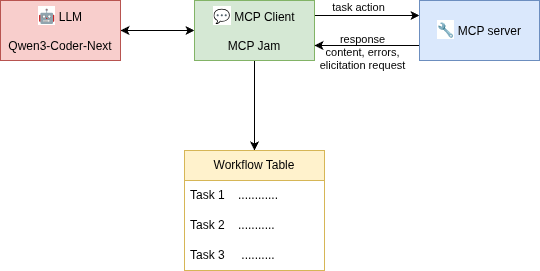

When tools need additional information from the user
Model Context Protocol — Architectural Patterns for User Intervention
https://sedgewickmm18.github.io/markus-mueller.github.io/
"Complete the deployment review task"Without human input, the tool either guesses wrong or refuses to act.
MCP provides two patterns to solve this.
https://sedgewickmm18.github.io/markus-mueller.github.io/
| Explicit Prompting | MCP Elicitation | |
|---|---|---|
| Who initiates? | User / Client | Server |
| Pattern | Server returns error → user provides params → retry | Server pauses → asks for input via modal |
| UX | Error message → form → second call | Dynamic modal / form |
Use the arrow keys to navigate. Down arrows dive into details.
User-Initiated Control
The client calls the tool without parameters; the server returns an error message explaining what is needed. The user provides the missing data and the client retries.
↓ See it in action
"Complete the deployment review"
{
"method": "tools/call",
"params": {
"name": "task_action",
"arguments": {}
}
}
{
"isError": true,
"content": [
{
"type": "text",
"text": "Missing required parameters.
Please provide 'action' (approve|reject)
and 'comment' (mandatory justification)."
}
]
}
✓ Works with any MCP client
{
"method": "tools/call",
"params": {
"name": "task_action",
"arguments": {
"action": "approve",
"comment": "All tests passed, ready for production"
}
}
}
{
"content": [
{
"type": "text",
"text": "Task completed: deployment review approved."
}
]
}
✓ Zero ambiguity • ✓ User stays in control
Server-Initiated Pausing
The server pauses execution to request missing parameters via a JSON Schema form — no error, no retry needed.
↓ See it in action
"Complete the deployment review"
{
"method": "tools/call",
"params": {
"name": "task_action",
"arguments": {}
}
}
{
"type": "elicitation",
"title": "Complete Workflow Task",
"message": "Please choose an action and provide a comment.",
"requestedSchema": {
"type": "object",
"properties": {
"action": {
"type": "string",
"enum": ["approve", "reject"],
"description": "Select action"
},
"comment": {
"type": "string",
"description": "Mandatory justification"
}
},
"required": ["action", "comment"]
}
}
MCP Elicitation is a newer capability. Currently supported by:
Explicit Prompting works with all MCP clients by contrast.
| Aspect | Explicit Prompting | MCP Elicitation |
|---|---|---|
| Trigger | Client detects error & prompts user | Server initiates when params are missing |
| UX Pattern | Error message → form → retry | Direct modal / dynamic form |
| Ambiguity | Low — error message explains what's needed | Low — schema constrains input |
| Client Compat. | Works with every MCP client | Requires elicitation-capable client |
| Round-trips | Two calls (error + retry) | Single call (server waits) |
| Flexibility | Error message is free-form text | Schema allows rich, validated input types |
| Implementation | Simple — return error, then accept params | More complex server-side state management |
| Safety | User explicitly provides all data | Server enforces schema validation |

MCP client supporting elicitation
Tables, deep dive etc.
MCP client without elicitation — if time permits
https://sedgewickmm18.github.io/markus-mueller.github.io/
Workflow task handling — inbox state transitions
https://sedgewickmm18.github.io/markus-mueller.github.io/
https://sedgewickmm18.github.io/markus-mueller.github.io/
Workflow Sequence Diagrams
↓ Navigate down for individual diagrams
https://sedgewickmm18.github.io/markus-mueller.github.io/
https://sedgewickmm18.github.io/markus-mueller.github.io/
https://sedgewickmm18.github.io/markus-mueller.github.io/